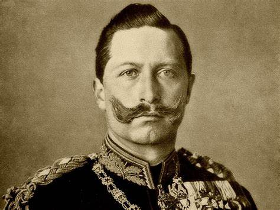

El Kaiser Guillermo ll de Alemania

¿Quien fue?
Guillermo II de Alemania (Wilhelm II) fue el último emperador alemán y rey de Prusia, nacido el 27 de enero de 1859 en Berlín y fallecido el 4 de junio de 1941 en Doorn, Países Bajos. Reinó desde 1888 hasta su abdicación forzosa en 1918, y su política belicosa contribuyó a desatar la Primera Guerra Mundial. Era hijo de Federico III de Prusia y de la princesa Victoria del Reino Unido, y su reinado estuvo marcado por tensiones políticas y militares en Europa. Su figura es clave para entender los eventos que llevaron al conflicto global y su impacto en la historia.
Vida social y política entre 1900 y 1914
Tras el despido de Hohenlohe en 1900, Guillermo II designó canciller al hombre a quien llamaba su propio Bismarck», el príncipe Bernhard von Bülow. Guillermo II esperaba encontrar en Bülow un hombre que combinara la habilidad del Canciller de Hierro con el respeto a los deseos del káiser, lo que permitiría al Imperio ser gobernado como creyera conveniente. Guillermo II ya había notado el enorme potencial de Bülow, y muchos historiadores piensan que su designación como canciller no fue más que la conclusión de un largo período de «arreglos». Sin embargo, durante la década siguiente, Guillermo se desilusionó de su decisión, y en vista de la oposición de Bülow sobre el Asunto del Daily Telegraph de 1908 y otros más, el káiser despidió a Bülow y designó en su lugar a Theobald von Bethmann-Hollweg en 1909.
Participacion en La Primera Guerra
crisis de Sarajevo
Artículo principal: Crisis de julio
Guillermo II era íntimo amigo del archiduque Francisco Fernando de Austria y quedó profundamente conmocionado por su asesinato, el 28 de junio de 1914. Guillermo II ofreció su apoyo a Austria-Hungría para desmantelar la Mano Negra[cita requerida], la organización secreta que había planeado el asesinato, e incluso sancionó el uso de la fuerza por parte de Austria contra la presunta fuente del movimiento: el Reino de Serbia. Quería permanecer en Berlín hasta que la crisis fuera resuelta, pero su corte lo persuadió de ir a su crucero anual por el mar Báltico el 6 de julio de 1914. Probablemente se sabía que su presencia sería útil para aquellos elementos en el gobierno que deseaban sacar provecho de esta crisis para aumentar el prestigio de Alemania, incluso con el riesgo de una guerra general, algo a lo que Guillermo era extremadamente aprensivo.
Guillermo hizo intentos erráticos para permanecer informado de la crisis por medio de telegramas, y cuando el ultimátum austrohúngaro se entregó
a Serbia, se apresuró a volver a Berlín. Llegó a la ciudad el 28 de julio, leyó una copia de la respuesta serbia, y escribió en ella:
Cargos y datos importantes de Káiser Guillermo II
| Cargo / Rol | Periodo | Descripción |
|---|---|---|
| Emperador de Alemania | 1888 - 1918 | Fue el último emperador alemán; gobernó durante la Primera Guerra Mundial. |
| Rey de Prusia | 1888 - 1918 | Como emperador alemán, también ocupaba automáticamente el trono prusiano. |
| Jefe supremo del Ejército Alemán | Durante su reinado | Tenía autoridad sobre el mando militar, aunque los generales tenían gran autonomía. |
| Impulsor del militarismo alemán | Finales del siglo XIX e inicios del XX | Promovió la expansión del ejército y la armada, aumentando las tensiones en Europa. |
| Abdicación y exilio | 1918 | Abdicó tras la derrota en la Primera Guerra Mundial y se exilió en los Países Bajos. |